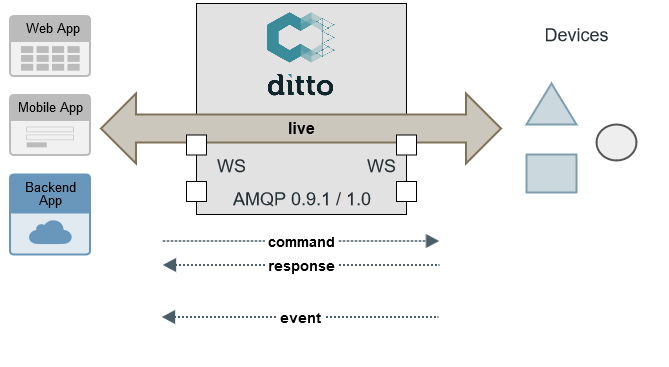
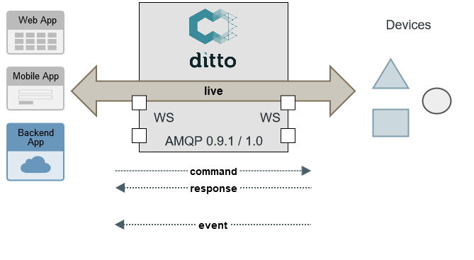

Eclipse Ditto:
an introduction
06/2021
Digital Twins
- digital representation of real physical devices
- act as broker for communicating with assets
- applicable for both industrial and consumer-centric IoT scenarios
DT - our interpretation
- a pattern for working with things in the IoT
- provide state persistence and search capabilities
- access twins always in an authorized way
- provide APIs - Device as a Service
- normalize device payloads
Eclipse Ditto in context

Ditto as
Digital Twin
"middleware"
turn device data into APIs
{
"thingId": "io.foo:car1",
"policyId": "io.foo:car1",
"attributes": {
"manufacturer": "Foo corp",
"productionData": {
"serialNo": 4711
}
},
"features": {
"temperature": {
"properties": {
"value": 23.42
}
}
}
}JSON repr. of a Thing
GET/PUT/DELETE /api/2/things/io.foo:car1
/api/2/things/io.foo:car1/thingId
/api/2/things/io.foo:car1/policyId
/api/2/things/io.foo:car1/attributes
/api/2/things/io.foo:car1/attributes/manufacturer
/api/2/things/io.foo:car1/attributes/productionData
/api/2/things/io.foo:car1/attributes/productionData/serialNo
/api/2/things/io.foo:car1/features
/api/2/things/io.foo:car1/features/temperature
/api/2/things/io.foo:car1/features/temperature/properties
/api/2/things/io.foo:car1/features/temperature/properties/value
modeling thing capabilities
- by default, thing attributes and feature properties are "schemaless"
- a feature may be aware of several "definitions" linking to a model

- a thing may be aware of one "definition" listing which features/aspects it provides
persistence of device state
- devices are not always connected to the net
- applications always need to be able to access their data
- twin vs. live access on API level
 

authorization
- Ditto contains a built-in authorization mechanism (Policies)
- every API call is authorized
search

- you must not
- Ditto has you covered
GET /api/2/search/things
?filter=like(attributes/manufacturer,"Foo*")GET /api/2/search/things
?filter=and(
exists(attributes/manufacturer),
gt(features/temperature/properties/value,23.0)
)
&namespaces=io.foo
&option=sort(-_modified,-attributes/manufacturer)
&fields=thingId,attributes/manufacturer,_modified- search for arbitrary data with RQL query
- Ditto again ensures authorization
- apply field projection over the results
- don't worry about indexing
get notified about changes
- notification via various channels: WebSocket, SSE, MQTT (3.1.1 | 5), AMQP (0.9.1 | 1.0), Apache Kafka, HTTP hook
- server side filtering via RQL (same as in search)
Eclipse Ditto +

could benefit from each other
- Eclipse Ditto bringing scalable "cloud-ready" digital twin framework to the table
- Ditto currently lacks modeling things
- WoT "Thing Models" could be a good fit for feature "definitions"
- later: WoT TD facade in Ditto?
Wrap up
- Digital Twins as pattern for simplifying IoT solution development
- Mission: provide Device-as-a-Service
- Eclipse Ditto as OpenSource framework for Digital Twins
Links:
- Ditto website and documentation
- GitHub - please give us a star ;)
- Chatroom to ask more questions
- Commercial offering incl. free plan